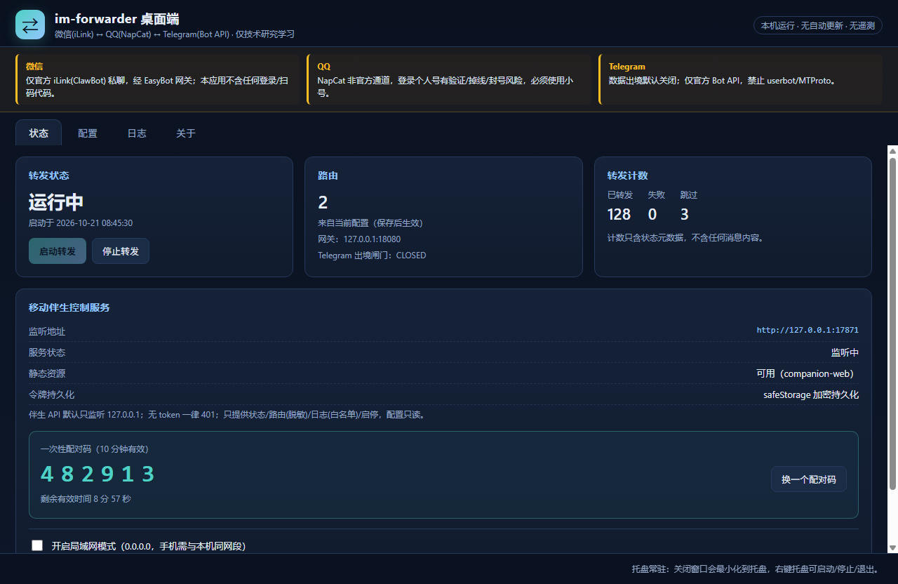
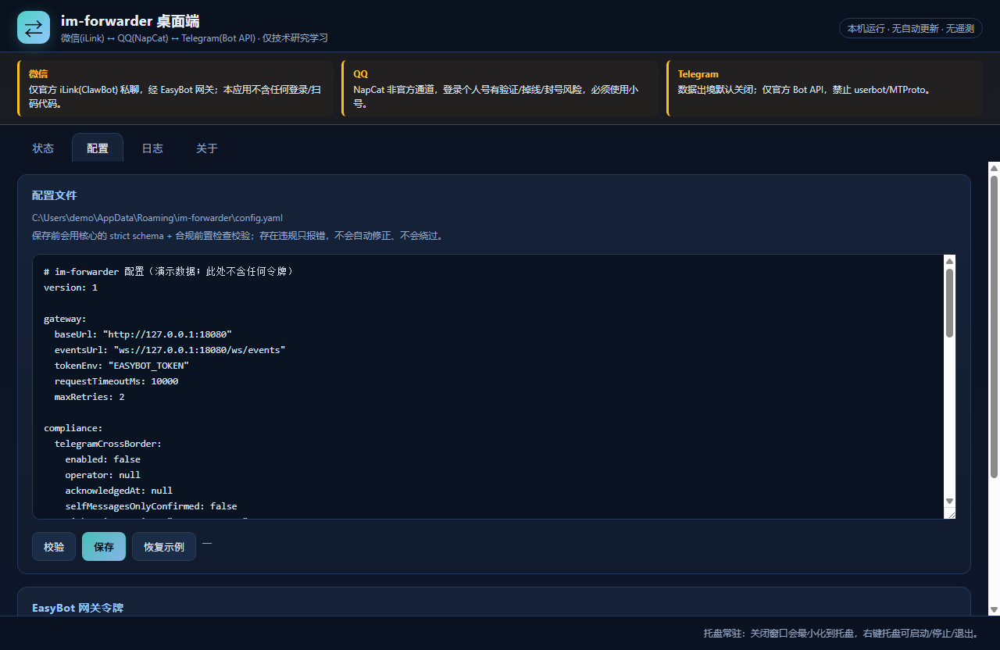
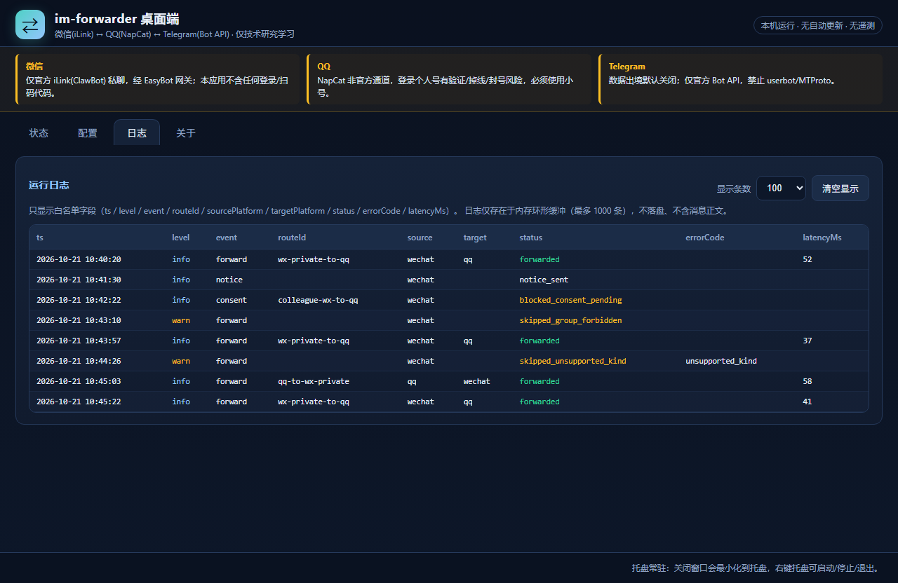
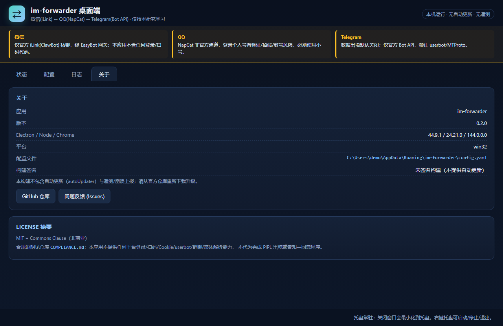
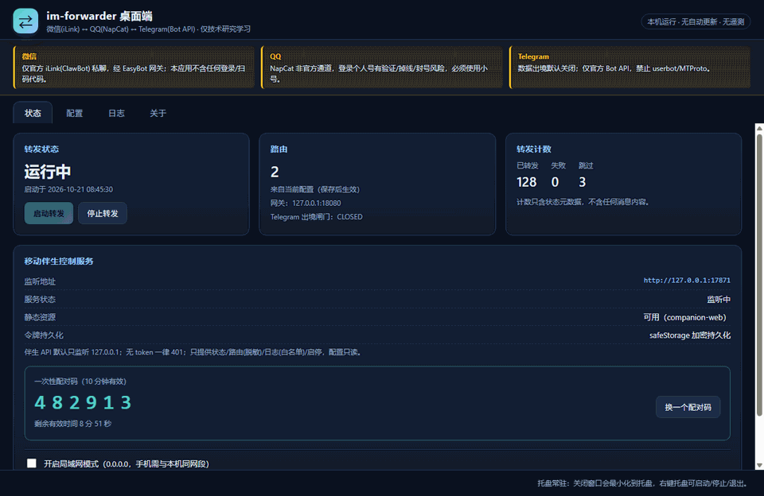

决策链演练：消息会被转发，还是被拦下？
点击场景，查看策略链逐级判定（与源码 src/routing/policy.ts 同序的简化镜像）。
选择一个场景开始。
数据出境闸门（PIPL 第 38 / 39 条）
真实实现里，只要存在“目标平台 = Telegram”的路由而闸门未完全打开，进程会拒绝启动（exit 78）。下面是同一套五要素判定的在线演示。
注意：真实前置检查还会拒绝“他人内容 + 出境”“群聊路由”“third-party 缺告知要素”等情况；这里仅演示出境闸门本身的五要素。
路由矩阵：有向边，不是两两硬编码
配置项语义：源平台:源会话 → 目标平台:目标会话；环必须由回环防护兜住。
| 路由 | 源 | 目标 | 出境边 | 内容归属 | 编译结果 |
|---|
默认双向链路（微信 ↔ QQ）天然构成 1 个环：因此 loopGuard.enabled 必须保持 true；关闭它会被前置检查拒绝（LOOP_GUARD_REQUIRED）。回环防护三层：回显 messageId → 短期 HMAC 指纹 → hop 预算。
路由矩阵编辑器（可视化，实时编译）
增删改路由，实时看到简化版编译结果。所有数据只在内存中，刷新即恢复；导出/保存请用桌面端配置面板。
| id | group | contentOwner | 源会话 | 目标会话 | 删除 |
|---|
编辑器每条路由只支持 1 个目标；真实配置支持最多 8 个目标。
真实桌面端界面（演示数据）
以下截图由真实 Electron 渲染进程离屏截取，数据为固定演示数据；不含任何真实聊天内容或令牌。





截图脚本：apps/desktop/scripts/capture-main.cjs（offscreen 渲染 + mock preload），可重复生成。